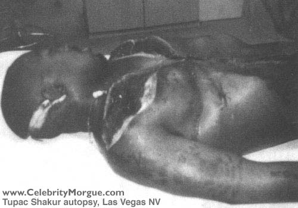

|
www.CelebrityMorgue.com
In late 1997 Cathy Scott published "The Killing of Tupac Shakur", which contained an autopsy photo of Shakur that had been leaked by a source within the Las Vegas police department.  Tabloid offers as high as $100K were turned down for the photo, which we reproduce above. LVMPD was not happy about the photo being leaked, but being property of the people of the United States, it is in the public domain. We reproduce it here.
|